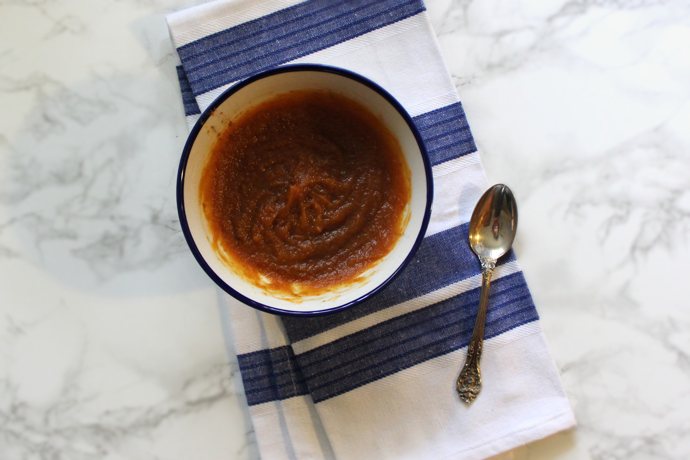
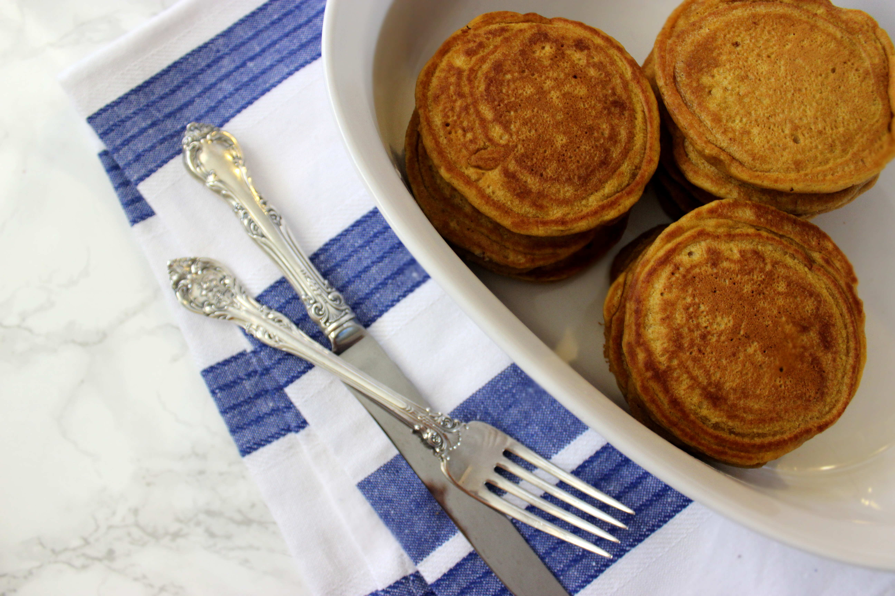
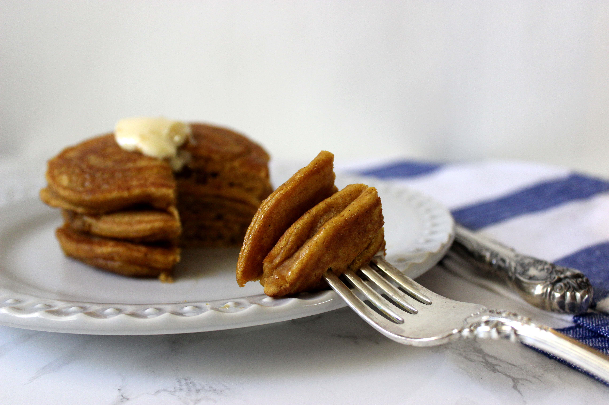
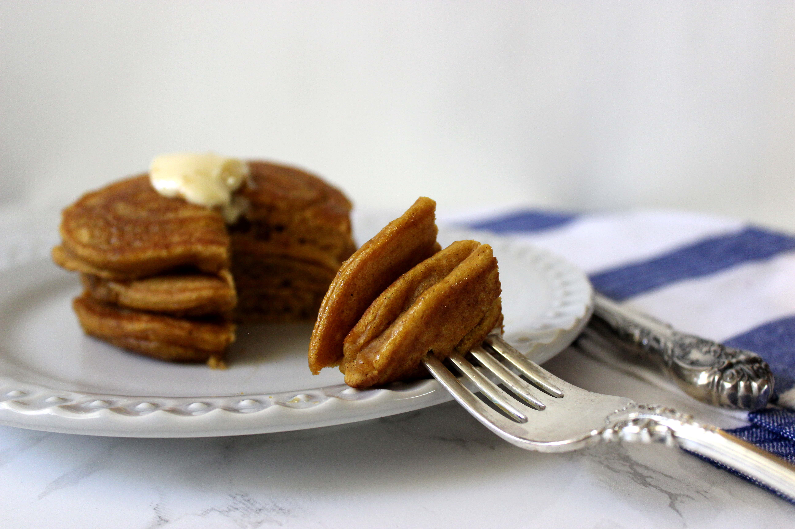

Pumpkin Pancakes

I suppose it is only appropriate that my first recipe post be one that pays a little tribute to my first real cooking accomplishment: pancakes. Not too long ago, the idea of me putting together a meal that required a little more skill than a bowl of cereal or a PB&J sounded quite absurd. If I remember correctly, my first real success at making pancakes was kind of a big deal –photos were taken to document this rare event in history.
Since then, I have grown a little more comfortable in the kitchen, to say the least. Comfortable enough to bring to you an improved, fall-inspired version of my first real cooking success. These pancakes are so good (and so easy to make) you won’t even know they’re vegan. Plus, who can say “no” to pumpkin anything in October? Scroll down to get the full recipe.


 

Ingredients
- 1 cup almond milk + 1 tbsp lemon juice
- 1/3 cup packed pumpkin puree
- 1 tbsp vegan butter (such as Earth Balance), melted (you can also substitute with coconut oil)
- ½ tsp vanilla extract
- 3 tbsp brown sugar
- 1 tbsp maple syrup
- ¼ tsp cinnamon
- ½ tsp all spice
- 1 tsp baking powder
- ½ tsp baking soda
- pinch salt
- 1 cup unbleached all-purpose flour
Instructions
- Preheat skillet/griddle to medium-low heat.
- Combine the 1-cup of milk and lemon juice in a large bowl. Let it sit for approximately 5 minutes to - curdle.
- Add pumpkin puree, butter, vanilla extract, brown sugar, and maple syrup and whisk to combine.
- Next add cinnamon, all spice, baking powder, baking soda, salt, and flour and combine with wet - ingredients. Add extra milk or flour as necessary to get the right consistency. Let the batter sit for at - least 5 minutes.
- Butter or spray your skillet/griddle with cooking spray and pour 1/4 cup measurements of the batter onto - the griddle. Flip when bubbles appear at the center of the pancake and the edges start to look dry.
- Cook the other side of the pancake for another 1-3 minutes.
- Top with butter and maple syrup.
Enjoy!
– Corinna